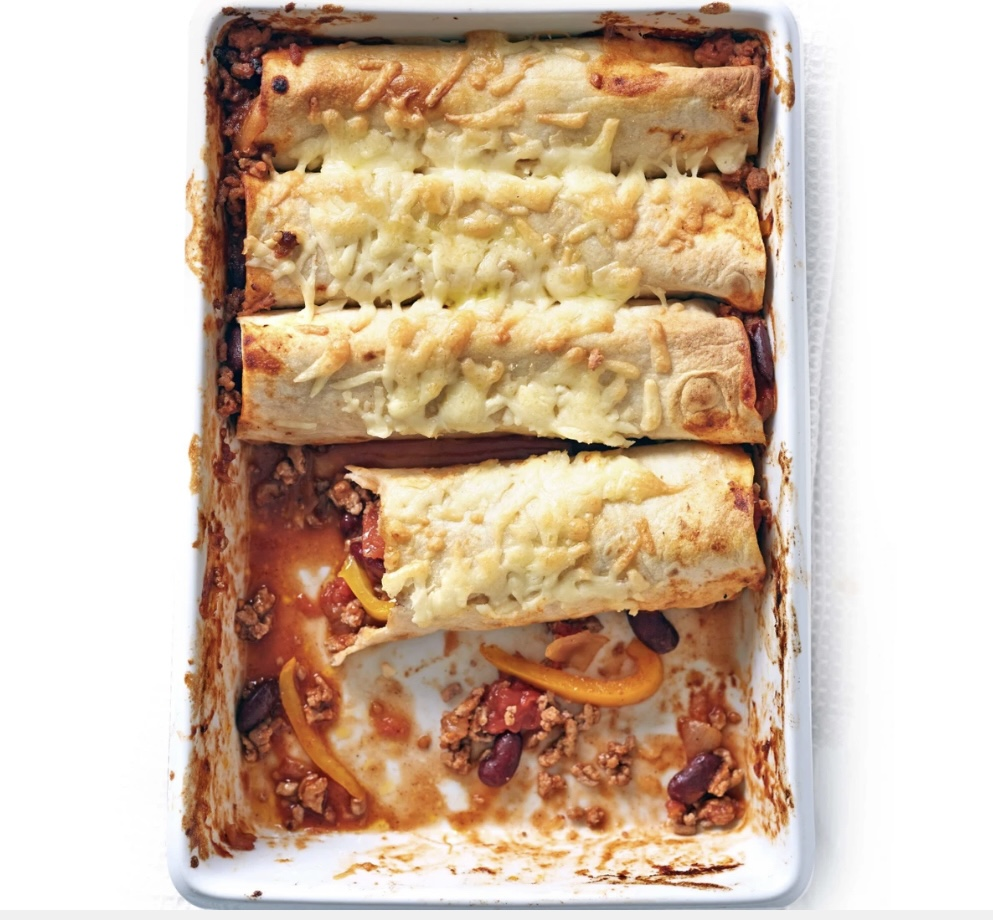

Turkey enchiladas

Description
Fill flour tortillas with lean turkey mince in a rich tomato sauce, then top with cheese and bake for a family friendly Mexican dinner
Ingredients
- 1 tbsp sunflower oil
- 500g turkey mince (2% fat)
- 1 medium onion, finely chopped
- 1 yellow pepper, deseeded and thinly sliced
- 400g can chopped tomatoes
- 400g can red kidney beans in chilli sauce
- 1 tbsp fresh lime or lemon juice
- 2 heaped tbsp roughly chopped coriander, plus extra to garnish
- 6 regular or 8 mini flour tortillas
- 50g reduced-fat mature cheddar, coarsely grated
- large mixed salad, to serve
Steps
- Heat oven to 200C/180C fan/gas 6. Heat most of the oil in a large non-stick frying pan. Fry the turkey, onion and pepper for 5 mins, stirring regularly and breaking up the mince with a wooden spoon. Add the chopped tomatoes and kidney beans.
- Bring to a gentle simmer and cook for 10 mins, stirring regularly. Remove from the heat and stir in the lime juice and coriander. Season well.
- Lightly grease a shallow ovenproof dish with the remaining oil. Put 1 tortilla in the dish and top with a couple of generous spoonfuls of the turkey mixture. Roll up and push to one side of the dish. Repeat with the other tortillas, then spoon any remaining turkey mixture down the sides of the dish.
- Sprinkle the tortillas with the cheese and bake for 15 mins. Scatter coriander over the enchiladas and serve with a salad.